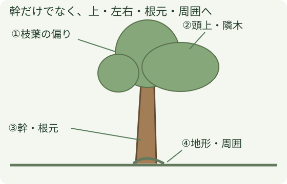
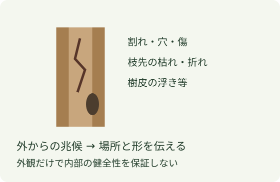

木の見方
木を見るときは、幹だけでなく枝葉・頭上・根元・周囲を合わせて見ます。気づいた点を、場所と形で伝えられることが第一歩です。

1 枝葉と傾きを見る
幹の傾きと、枝葉が多い側は別々に見ます。木全体の重さの偏りに関わりますが、傾いて見える方向だけで倒れる方向を決めません。風で枝先がどう動くかも確認します。
2 頭上と隣木をつなげて見る
枯れ枝・折れ枝、つる、隣の木との枝の絡みを探します。一本を動かすと、接している別の枝や樹木も動く場合があります。引っ掛かった部分へ近づいて確かめるのではなく、見える位置から関係を読みます。
3 幹と根元を見る

割れ、穴、傷、枯れた部分などを見ます。枝葉が付いていることと幹の内部が健全なことは同じではありません。見えた兆候と、内部まで確認できていない部分を分けて伝えます。
4 倒れた後まで周囲を見る
電線・道路・人・建物・隣木に加え、斜面、岩、切株、足元の障害を見ます。倒れる先の確認と、人が退避する経路の確認は別です。地面に着いた後の滑りや転がりも、伐倒前に考える対象です。
伝え方の例：「右上の枝が隣の木に絡んで見えます」「根元の道路側に割れが見えます」。見えた事実から話し、内部の状態や伐倒方法まで独断で確定しません。
5 観察から作業計画へ
この章は観察の基礎です。伐倒方法、切り込み、引綱、退避・立入範囲は、観察結果を基に作業責任者・作業指揮者が現場条件と技能に合わせて決めます。
今回の38枚には樹形や斜面の現場写真がないため、独自の概念図を使っています。実物での樹種・腐朽・重心の見極めを写真教材だけで認定するものではありません。
出典と適用範囲
- 全国林業改良普及協会：伐木作業の副教材（2025） — 印刷22–24頁、上方・周囲・樹形・絡み・枯損の観察。
- 厚生労働省：チェーンソーによる伐木等作業の安全に関するガイドライン — 調査・計画の項目。原典の切削方法や数値は、この章の図には採用していません。
2026年10月25日確認。図は独自作成です。掲載写真は受領済みの会社写真に限り、原典の図・写真は転載していません。